I understand how the work gets made.
•
I turn complexity into coordinated delivery.
•
I connect client trust with project economics.
Professional CV ↗
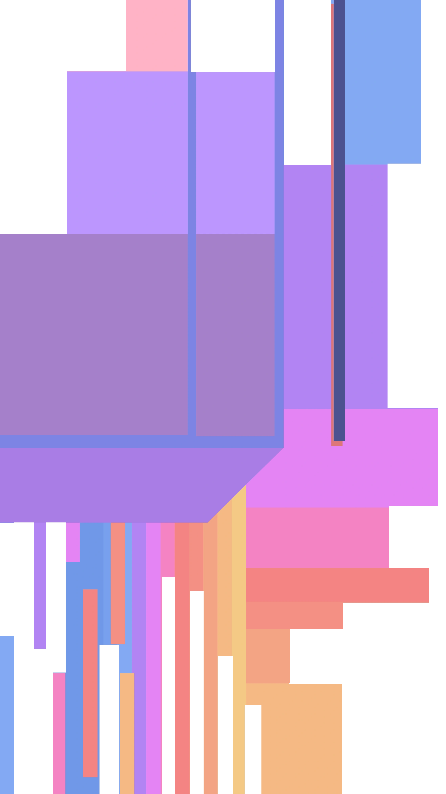
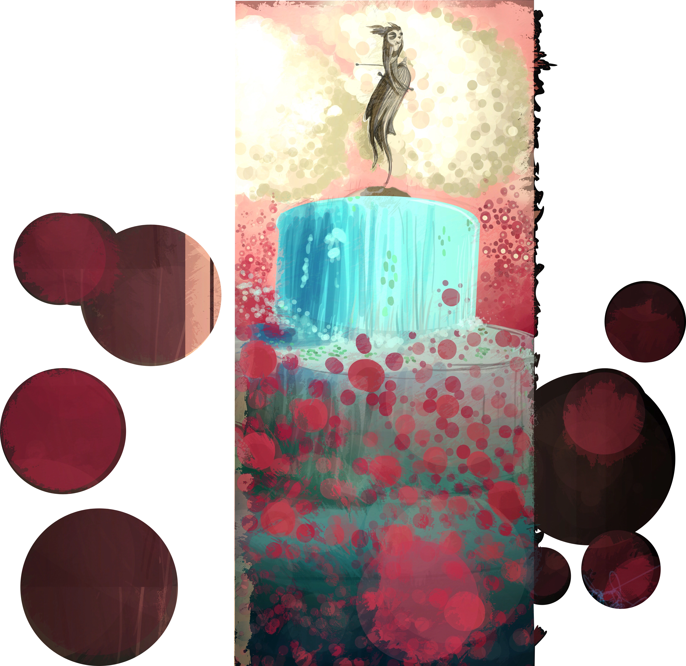
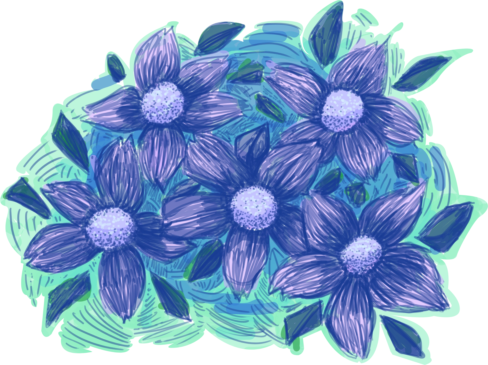
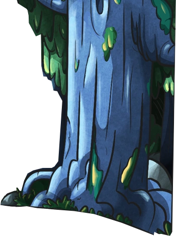
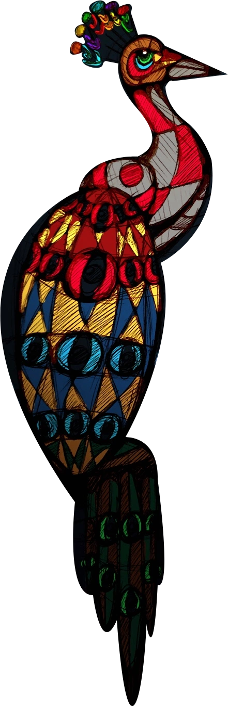
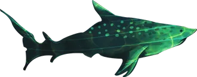
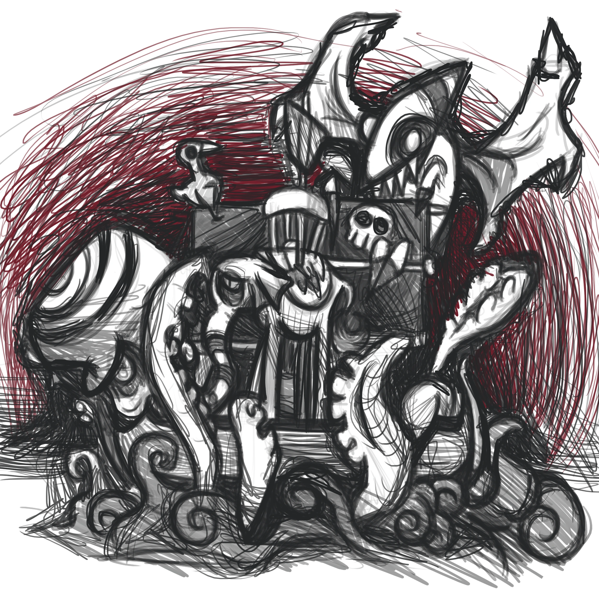
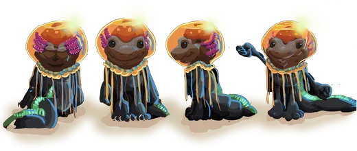
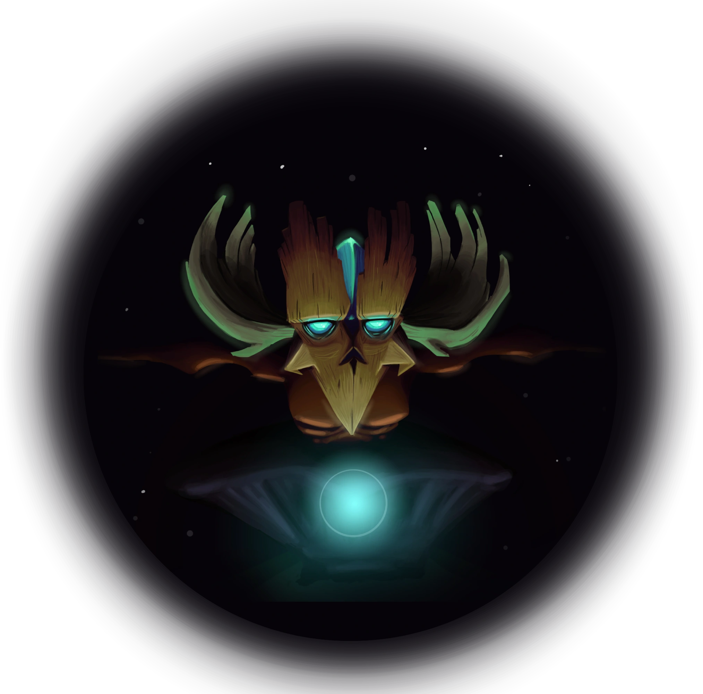
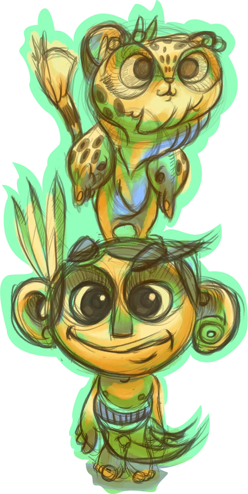
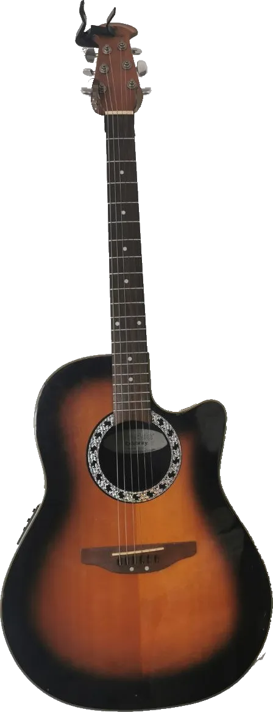
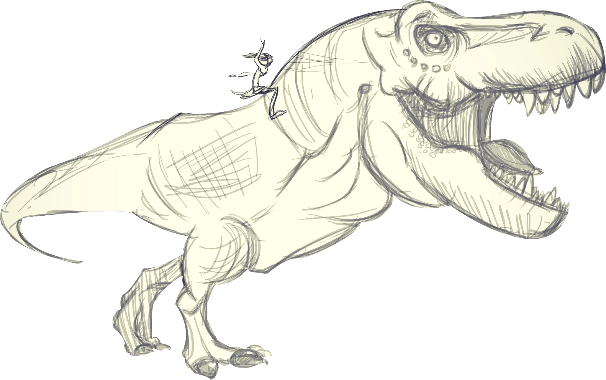
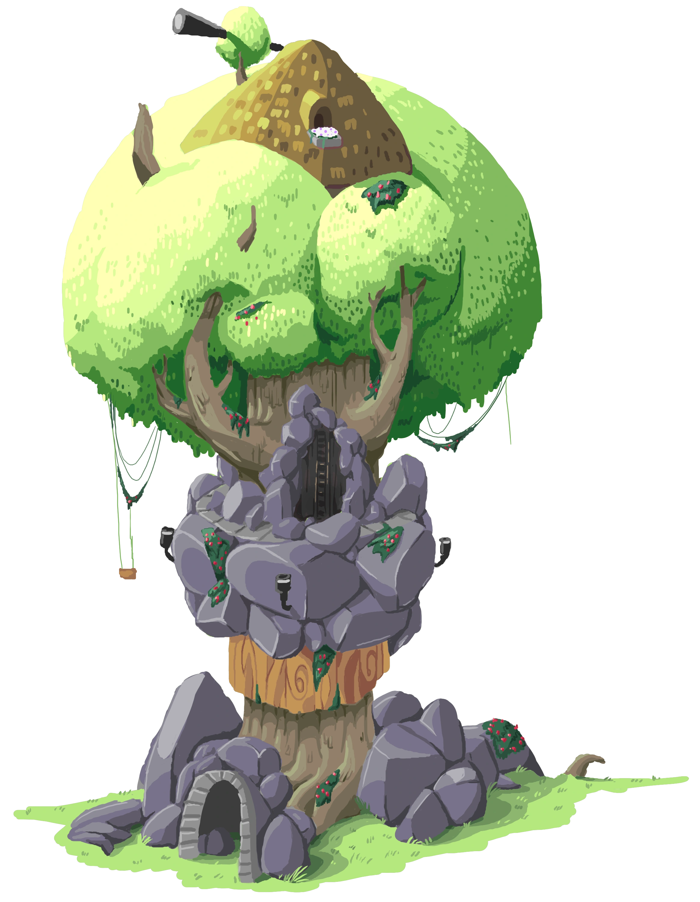
01
CREATIVE & DIGITAL
PRODUCTION
I understand how the work gets made.
My career began in digital animation and multimedia production. That foundation still matters: I can speak the language of design, video, 2D/3D animation, post-production, content and interactive experiences, even though my role today is to lead the system around the work rather than execute every craft myself.
Production fluency helps me scope more realistically, anticipate dependencies, give specialists clearer direction, and protect quality through review, QA and delivery.
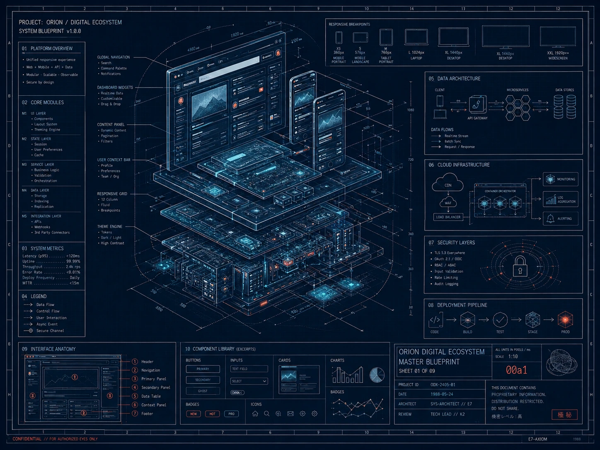
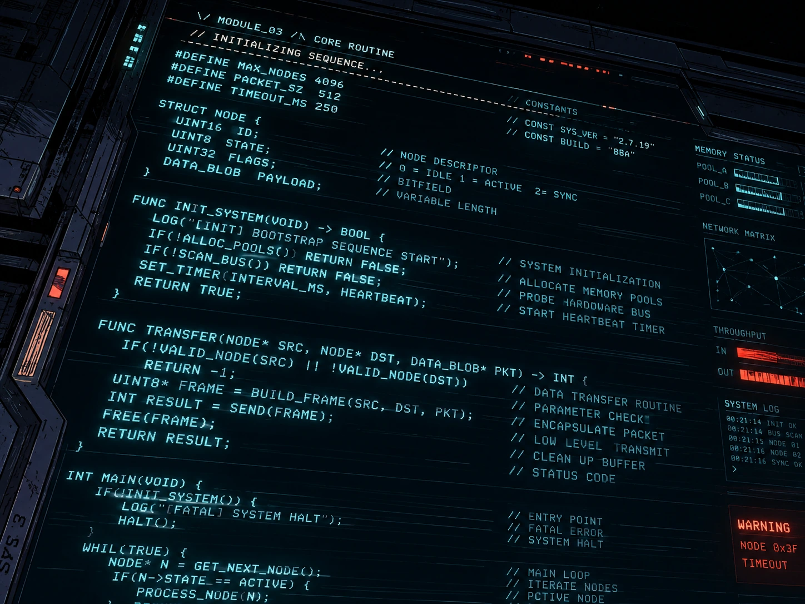
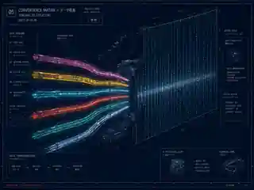
02
INTEGRATED
DELIVERY
I turn complexity into coordinated delivery.
The work I do best sits between disciplines. I translate ambiguous client needs into scope, plans, resources, timelines, dependencies and decisions, then connect specialists, stakeholders, vendors and technology through review, approval, launch and ongoing delivery.
At my best, I am the person keeping the whole system legible: what needs to happen, who owns it, what is at risk, and what has to change to protect the outcome.
03
CLIENT & COMMERCIAL
OWNERSHIP
I connect client trust with project economics.
For more than 10 years, I have worked directly with clients across discovery, proposals, pricing, negotiation, scope changes, delivery, invoicing, support and repeat work. That commercial perspective changes how I manage projects: decisions have consequences for time, capacity, margins, quality and trust.
I want to build work that is not only well executed, but sustainable for the client, the team and the business.
Let’s build work
that holds together.